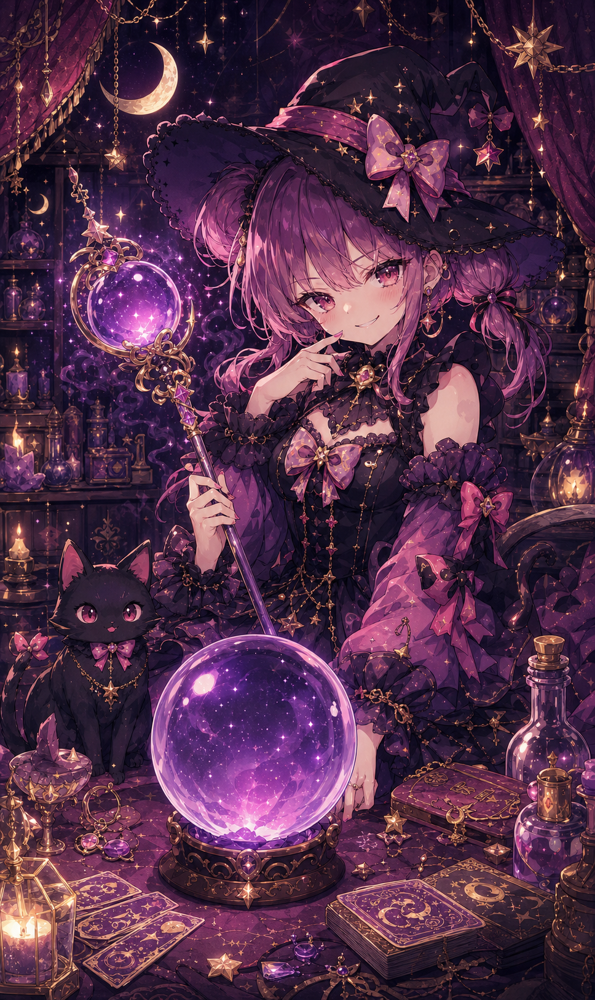

予約の取れない魔女占い
Witch, Please.
あなたの情報を教えてね
年齢
性別
女性
男性
その他
秘密♡
星座
選んでね
牡羊座
牡牛座
双子座
蟹座
獅子座
乙女座
天秤座
蠍座
射手座
山羊座
水瓶座
魚座
血液型
A型
B型
O型
AB型
不明
今日の運勢を占う
🔮
フフッ……あなたの運命、見せてもらうわ。逃げてもムダだけどね

♡占い受付中♡
本日の運勢
🔮
総評
もう一度占う
🔮
今日の運勢は、明日のあなたが「そんな日もあった」と言うための下書きです。